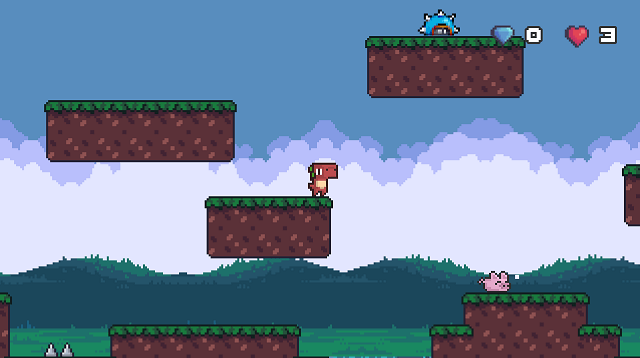
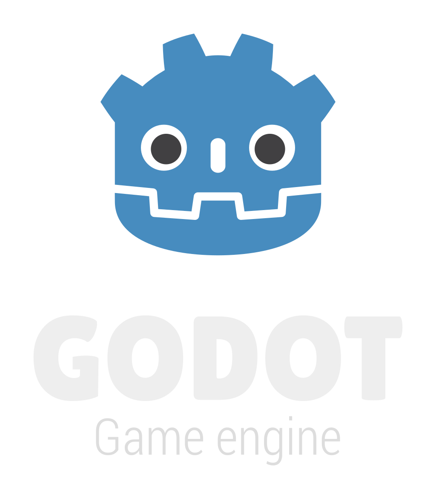

Dino Jump
Godot Engine and GDScript
A tiny platformer in Godot 3.2
Dino Jump is a single level platformer built in Godot and leveraging GDScript, a Python like language, developed to work within the engine. As I am not an artist or musician myself, all of the assets used to make this game come from the community of artists, many on Itch.io, that make their assets available for free on the Internet.
Godot Engine and GDScript
Godot is a 2D and 3D, cross-platform, free and open-source game engine released under the MIT license. It was initially developed by Argentinians Juan Linietsky and Ariel Manzur for several companies in Latin America prior to its public release. The development environment runs on multiple operating systems including Linux, BSDs, macOS, and Microsoft Windows. Godot can create games targeting PC, mobile, and web platforms.
Godot aims to offer a fully integrated game development environment. It allows developers to create a game, needing no other tools beyond those used for content creation (visual assets, music, etc.). The engine's architecture is built around the concept of a tree of "nodes". Nodes are organized inside of "scenes", which are reusable, instanceable, inheritable, and nestable groups of nodes. All game resources, including scripts and graphical assets, are saved as part of the computer's file system (rather than in a database). This storage solution is intended to facilitate collaboration between game development teams using software version control systems.
GDScript is a high-level, dynamically typed programming language used to create content. It uses a syntax similar to Python (blocks are indent-based and many keywords are similar). Its goal is to be optimized for and tightly integrated with the Godot Engine, allowing great flexibility for content creation and integration.
- Source Wikipedia